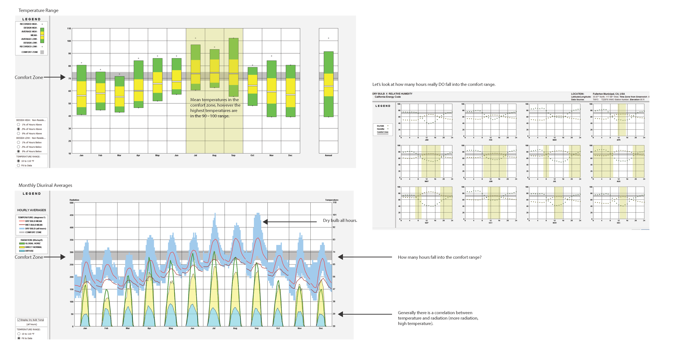
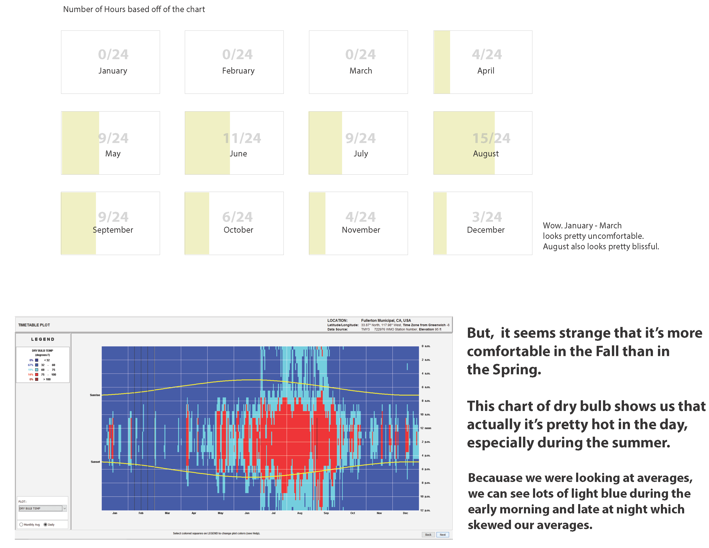
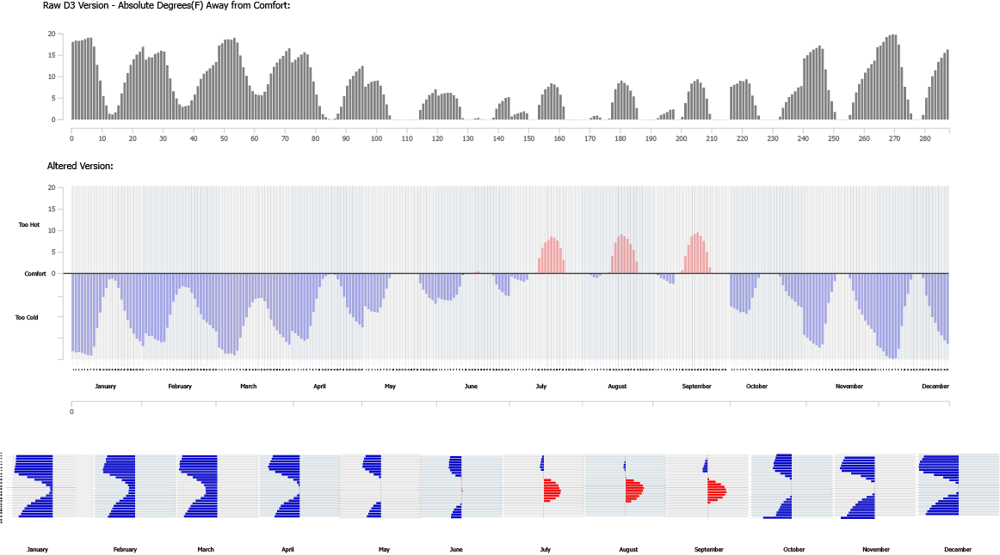
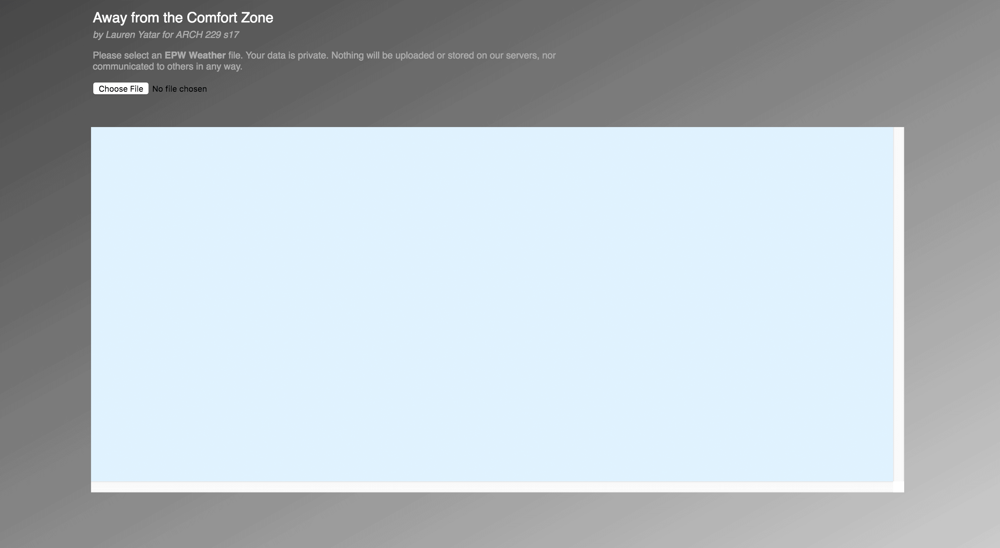
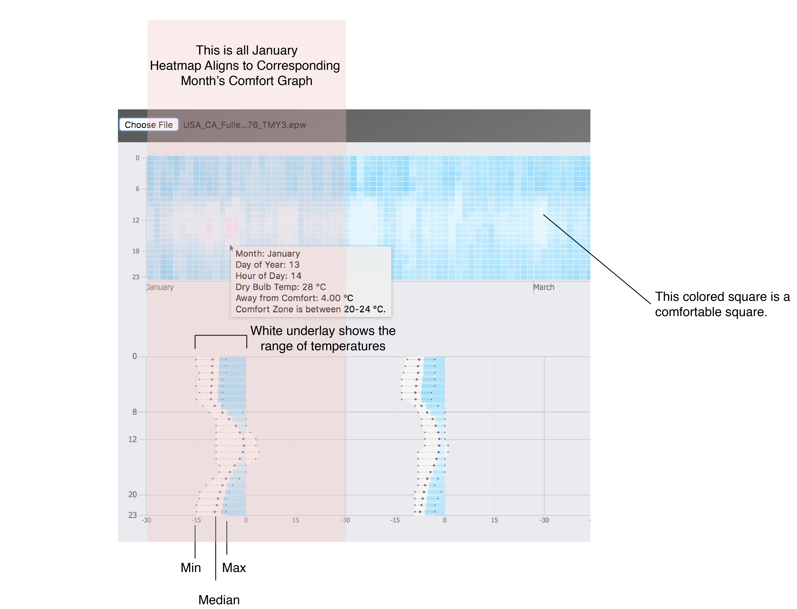
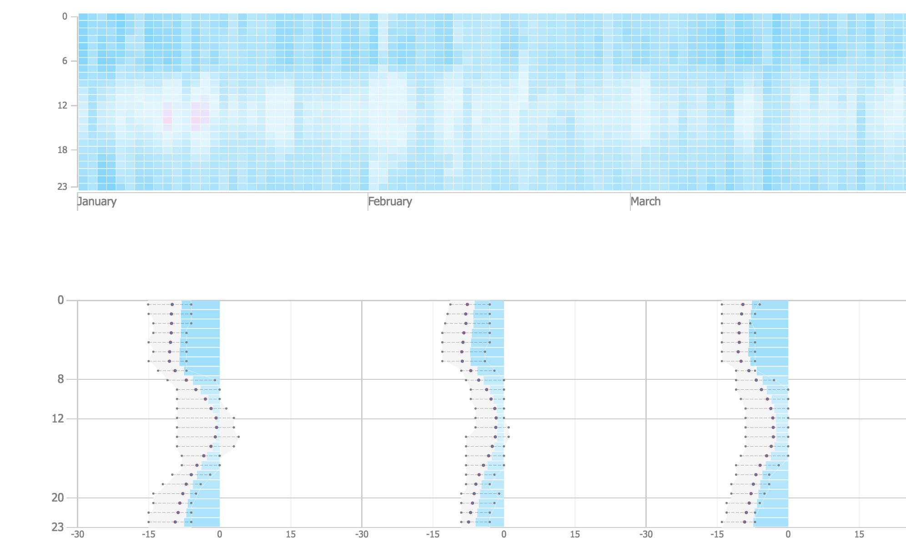
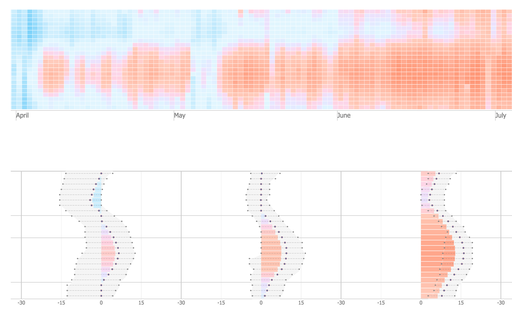

How far from Comfort?
Background on the Tool
Architects and building scientists need climate data to inform their design decisions but many of the visualizations are difficult to understand. Also, the digital tools are still static visualizations. For this project, I aimed to do three things:
This tool is generally aimed at architecture and building science students who are already familiar with epw files and a basic understanding of building science, energy, and the environment.
The total timeline for this project was 10 weeks from research, exploration and prototyping. Prototyping in d3 lasted about 4 weeks. General tool template was set by the instructor and the dy library was used to parse epw information.
- Make it easier to understand what the climate is like.
- Challenge Conventional Climate Visualizations
- Create an interactive tool.
This tool is generally aimed at architecture and building science students who are already familiar with epw files and a basic understanding of building science, energy, and the environment.
The total timeline for this project was 10 weeks from research, exploration and prototyping. Prototyping in d3 lasted about 4 weeks. General tool template was set by the instructor and the dy library was used to parse epw information.
Let's only look at the climate through the lens of comfort.
The most common way to use climate data is to find out when it's comfortable. The epw contains a lot of information so it was important to find a way filter the information to get only what we wanted to know. This visualization only takes one value (dry bulb temperature), but it is easy to adjust the visualization for a different piece of information. This graphs requires two pieces of information:
NOTE: To be able to use the tool (epw version) requires an epw file which can be found here and then you must upload the epw file into the tool.
Sorry for the inconvenience. The tool is designed for an audience that would already have epw files at their fingertips.
For your convenience you can find San Francisco here: Right Click and Save
- Value from epw file(dry bulb temp, dew point temp, rel humidity, etc.)
- Formula (in this case comfort is a range (i.e., low < x < high))
NOTE: To be able to use the tool (epw version) requires an epw file which can be found here and then you must upload the epw file into the tool.
Sorry for the inconvenience. The tool is designed for an audience that would already have epw files at their fingertips.
For your convenience you can find San Francisco here: Right Click and Save
Why do we need new tools and what tools are out there?
Many of the charts used to interpret climate data are very hard to use. Looking at this chart from Climate Consultant (below), we see an overlay of dry bulb temperature, relative humidity, and the comfort standard. While you can see the general trend and compare how each looks different month to month, the problem is that you can't see the exact numbers or pieces of information that are on the page.

Other common methods are using CAD software plugin combinations such as Grasshopper, Ladybug, Honeybee, and DIVA alongside Rhino 3D (which requires taking time to learn). Of course, you could use a spreadsheet or python to do parse the epw information and graph (which I tried), but that requires programming. A common architect student is not likely to have programming knowledge. A building science student may if they came from a technical background like mechanical engineering, but hard-coding a program would take away their time to actually analyze the data and make something.
The goal is to create a visualization that shows how many degrees away we're away from the comfort zone given a specific time for a location.
This project is a redesign of the above chart (diurnal temperature chart).
It is simplified for users who might use the chart to find comfortable temperatures based off the California Energy Model, 2013's definition of comfortable Dry Bulb Temperatures. It can take in any epw file and display a chart. EPW files can be found at https://energyplus.net/weather. For my redesign I focused on displaying only one type of information, dry bulb temperature, as a starting point. Of course it must be noted that you can't tell if an environment is comfortable from just dry bulb (you need at least humidity), but for clarity, I wanted to use only one type of information.
Graph Overlays (Design Process)

To get a sense of what the climate graphing programs were already doing and to wee what type of information was essential I went over a couple of exercises of adding overlays over Climate Consultant graphs to gauge what types of information I wanted to extract from the graphs and to see what the essential goal of reading climate data might be.

When I broke it down, what I really wanted to find out was when was it comfortable (based off of their criteria for comfort). Since essentially, when it's comfortable you don't need to turn on the ac or heater.
HOWEVER, a big issue of just counting the hours of comfort was that you can't tell when it's too hot or too cold. There's another set of information you're missing and you can't correctly describe the climate just by counting hours. Therefore, I wanted to find a mechanism that would tell us:
HOWEVER, a big issue of just counting the hours of comfort was that you can't tell when it's too hot or too cold. There's another set of information you're missing and you can't correctly describe the climate just by counting hours. Therefore, I wanted to find a mechanism that would tell us:
- A. When it's not comfortable
- B. When it's too hot or too cold
- C. By how much
Data manipulation in python, graphing in excel, designing in illustrator and finally D3
Before directly working with d3 (I began the project with no d3 experience and a hello-world-like knowledge of javascript), I worked on manipulating epw data in python and used excel to plot the data. I took that data and then visualized statically how it might look. I decided to flip the bar chart horizontally because you can't compare the hours vertically when the months are laid out horizontally. The horizontal bar chart is not a preset in d3 (d3 also doesn't like graphing negative values), so it was important to visualize the graph using other methods first.

The horizontal bar chart was a winner because:
- You can compare hours looking horizontally.
- You can easily see when it's too hot versus too cold (right vs left)
- You can see hourly trends in a month (during the summer it's too hot during the day, early morning/ late night is very cold, etc.)
- If you see more ink, you know to pay more attention to those times. If you don't see anything, it's comfortable so you don't have to worry about it.
Interaction must be meaningful!
This is one of my earliest examples (this is Fullerton in July) where I experimented with interactivity and learned that it did nothing but add bling. If you right click, reload, you will see that the diagram starts off as red and then goes to gray for no real reason (other than fun). Hovering over the numbers they bounce. If you can skillfully hover over a number long enough it will move to the center so you can more easily see the away from comfort value next to its corresponding bar.
Interactivity can be a lot of fun, but it should be adding more information or help tell you something.
Interactivity can be a lot of fun, but it should be adding more information or help tell you something.
Early Iteration

The basic concept is that it would be an online tool where an epw file for the user's desired city would be uploaded and a graph would be displayed showing the climate data. The bar graph on the side indicates how many degrees away from the comfort zone. Each bar represents the average temperature for an hour monthly (for example, all of the 8am temperatures of January are sum in the January 8am bar) that is applied to the comfort formula. Light blue indicates it's too cold and red indicates it's too hot. The line graph to the right of the graph is a graph of the original average temperatures. When the user hovers an a bar, a tooltip provides more exact information about how far from comfort, the exact temperature average, and information about what the comfort scale is. When the user clicks on the graph, it reveals the dew point temperature (the green graphs) instead of the dry bulb temperature.
Even if this polished iteration was clean and simple, it wasn't clear how comfortable it was day to day and comparing across hours was difficult.
I lost the horizontal scroll features from my earlier sketch that made it easy to compare against the same hours. I went back to the drawing board to have a more holist view of the dry bulb temperature for the climate. The tooltip was helpful for showing more information, but perhaps I could try to work with gradients to help better decipher the value differences?
How to Read the Latest Iteration

This uses the same concept as earlier iterations, but with the added goal of creating a more holistic story about the climate. What is the temperature like everyday versus to when you compare it to monthly?
Note: You might notice that the bar graph and the median point in the line graph do not match up even though they should be the same value. This is likely due to the different plotting and rounding mechanisms for line graphs vs bar charts. Since the values are in Celsius, a small rounding difference shows a big gap.
Note: You might notice that the bar graph and the median point in the line graph do not match up even though they should be the same value. This is likely due to the different plotting and rounding mechanisms for line graphs vs bar charts. Since the values are in Celsius, a small rounding difference shows a big gap.
Example 1
Fullerton, California; January - March

The top is a heat map where you can see the temperature for each day.The more vibrant colors you see the more extreme temperatures. The bottom is a bar graph inverted its side denoting how far away the monthly average is away from comfort. The longer the bar, the more away from comfort. The side line plot indicates the high and lows and the light gray shading indicates the average temperature ranges calculated under the comfort function to see how faraway that temp really is from comfort.
Example 2
Phoenix, Arizona; April - June

Phoenix has some of the hottest temperatures. As you can see there is more red, especially during the day. But during the morning and night in may we can see that its cool and can even be below the comfortable temperature.
Ways to Further Improve the Climate Visualization
This is a very early and exploratory attempt to look at d3 and climate data in the given time frame of 10 weeks (even interactivity seemed out of scope at a time). For this to be more of a tool requires more advanced front-end development (the seminar was for architecture and building science students with some programming (javascript was not required)) which was out of the scope of this 2 unit seminar. However, within the scope some ways to improve the prototype would be to add:
- Ability to set conditions (asking the user what they would like to set comfort as, letting them add equations, etc)
- More variables (humidity, wind speed, etc.)
- Clearer articulation of what data is being shown (better annotation of the axes and consistency)
- Adjust Scale (The scale goes from -30 to 30, but many places can be more than -30C from the comfort zone (Alaska), but for a place to be 54C (30C above 24C) is very concerning and unlikely).
- Ability to turn on and turn on functions (Are we showing too much at one time? Do I really want to see max and min ranges?)
- Ability to see more than one climate (you can load multiple epw files and they will display, but it is very heavy on the browser and svg canvas size must be adjusted)
- Gradient Color (the color of a comfortable square is a very very light blue instead of white which is confusing and was a criticism of graph)
Main Takeaways
I'm the type who wants to see important information boiled down to its simplest form. However, you might lose background information that's important for the whole picture. In data visualization you gain and lose different information through different scales. What do you want to show and what is necessary? A better way to show information is to choreograph when information is showed by time. You can animate when more information would be revealed. A tooltip can give you the little details without obstructing your view of the whole picture. You don't have to show everything at once.
Another important lesson I learned is that software and coding are essentially tools. Knowing how they function and what you can do is important, but without having an idea of what you want to do with them won't get you very far.
You need to have a story to tell!
Another important lesson I learned is that software and coding are essentially tools. Knowing how they function and what you can do is important, but without having an idea of what you want to do with them won't get you very far.
You need to have a story to tell!